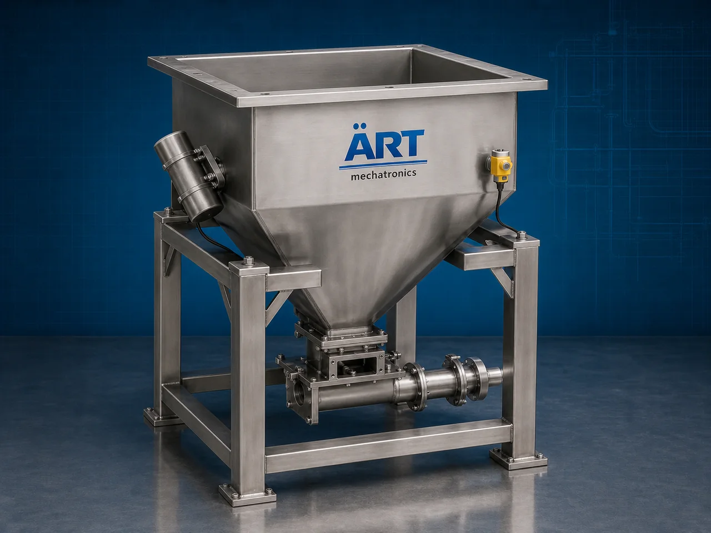

Hopper Machine (Industrial Material Storage, Feeding & Discharge System)
A Hopper Machine, also known as an Industrial Hopper, Storage Hopper, or Material Feeding Hopper System, is an essential industrial equipment designed for temporary storage, controlled feeding, buffering, discharge, and handling of powders, granules, grains, pellets, liquids, semi-solid materials,…

About the Hopper Machine
Hopper systems are widely used for: ✔ Bulk material storage ✔ Controlled material feeding ✔ Product buffering ✔ Conveyor feeding systems ✔ Packaging machine feeding ✔ Industrial automation processes
The machine improves: ✔ Material flow efficiency ✔ Production continuity ✔ Process automation ✔ Material handling accuracy ✔ Labor reduction ✔ Factory workflow management
Industrial hoppers are manufactured using: ✔ Stainless steel construction ✔ Mild steel construction ✔ Food-grade hygienic designs ✔ Heavy-duty industrial structures
to ensure smooth material flow and reliable industrial operation.
Hopper machines are widely used in industries such as:
Mouth freshener & pan masala industries
Tobacco industries
Food processing industries
Spice industries
Flour mills
Chemical industries
Pharmaceutical industries
Plastic and recycling industries
where controlled material storage and feeding are essential for continuous production operations.
The machine is highly suitable for: ✔ Powder storage ✔ Granule feeding ✔ Grain buffering ✔ Packaging line feeding ✔ Bulk material discharge ✔ Automated process feeding
ART Mechatronics offers high-performance hopper machines, engineered for continuous industrial operation, smooth material discharge, hygienic construction, and reliable long-term performance.
Working Principle of Hopper Machine
Powders, granules, grains, pellets, flakes, or bulk materials are loaded into hopper from: ✔ Conveyors ✔ Bucket elevators ✔ Pneumatic conveying systems ✔ Manual feeding systems
Hopper temporarily stores material and maintains continuous supply to production system
Ensures uninterrupted industrial operation and controlled material flow.
Machine handles: ✔ Powders ✔ Spices ✔ Supari ✔ Flour ✔ Pellets ✔ Granules ✔ Food ingredients through gravity or assisted discharge systems.
Material discharged using: Gravity flow Screw feeder Rotary valve Vibratory feeder Pneumatic discharge system depending on application requirements.
Hopper integrates with: Mixers Packaging machines Conveyors Weighing systems Processing plants
Material supplied continuously to downstream process equipment automatically
Types of Hopper Machines
- 1. Storage Hopper
Designed for: ✔ Bulk material holding and buffering applications
- 2. Feeding Hopper
Suitable for: ✔ Controlled material feeding systems
- 3. Weighing Hopper
Uses: ✔ Load cell-based accurate batching systems
- 4. Vibratory Hopper
Designed for: ✔ Smooth flow of difficult materials
- 5. Food Grade Hopper
Suitable for: ✔ Hygienic food and pharmaceutical applications
- 6. Heavy Duty Industrial Hopper
Designed for: ✔ Large-scale bulk material handling operations
Industries Using Hopper Machines
🌿 Mouth Freshener & Pan Masala Industry Supari, pan masala, tobacco powder, and flavor handling systems 🚬 Tobacco Industry Khaini, snus, filter khaini, zarda, and nicotine product feeding systems 🌶️ Spice Industry Turmeric, chilli, cumin, coriander, and seasoning storage systems 🍃 Food Processing Industry Ingredient storage and feeding systems 🌾 Flour & Grain Industry Flour, wheat, maize, rice, and grain handling systems 💊 Pharmaceutical Industry Powder and granule feeding systems ⚗️ Chemical Industry Powder and liquid chemical storage systems ♻️ Plastic & Recycling Industry Plastic granule and recycling material handling systems
Features & Advantages
✔ Efficient bulk material storage and feeding ✔ Continuous industrial production support ✔ Smooth and controlled material discharge ✔ Heavy-duty industrial construction ✔ Hygienic food-grade design options available ✔ Low maintenance and easy cleaning system ✔ Easy integration with conveyors and process equipment ✔ High-capacity storage capability ✔ Energy-efficient material handling solution
Technical Highlights
Hopper Type: Storage hopper Feeding hopper Vibratory hopper Weighing hopper Construction: Stainless Steel (SS304 / SS316) Mild Steel (MS) Discharge System: Gravity discharge Screw feeder discharge Rotary valve discharge Features: Load cells Vibrators Level sensors Pneumatic gates Automation: Semi-automatic Fully automatic PLC-based systems
Turnkey Hopper System Solutions
ART Mechatronics offers: Complete hopper storage and feeding systems Bulk material handling solutions Conveyor and mixer integration systems Packaging line feeding solutions Installation & commissioning After-sales service & AMC
Why Choose Art Mechatronics
Expertise in industrial bulk material handling systems Customized hopper solutions for multiple industries High-performance and durable industrial construction Hygienic and corrosion-resistant designs Proven industrial performance across sectors
Applications
Pan Masala Manufacturing Plants Tobacco Processing Units Spice Processing Plants Food Processing Industries Pharmaceutical Manufacturing Units Chemical Industries
Industries that use the Hopper Machine
Related Storage & Elevation machines
Get pricing & specs for the Hopper Machine
Share the product, target capacity, current process and plant location. These details help our engineers discuss the right machine or line configuration.
One partner, from design to start-up
ART Mechatronics designs, manufactures, installs and commissions your Hopper Machine solution with regional presence in India, UAE and Thailand.